179 — Capstone: implementación y operación
Parte: 14 — Plataformas avanzadas, capstones y carrera
Nivel: experto-frontera · Horas estimadas: 8
Laboratorio: capstone · Estado: EXECUTABLE_CORE
🎯 Propósito
Construir lo diseñado en la clase 178, ponerlo a funcionar y —lo que de verdad distingue un proyecto terminado de uno presentado— ejecutar las pruebas negativas de todo el programa y publicar lo que encuentren, incluidas las que fallen. La clase da el orden de construcción que evita rehacer trabajo, la lista completa de comprobaciones, el modo de medir el antes y el después sin engañarse, y la disciplina de anotar lo que se decidió no hacer y lo que salió mal.
📚 Resultados de aprendizaje
Al finalizar podrás:
- Construir en el orden que evita rehacer: base, datos, entrega, operación.
- Ejecutar las pruebas negativas del programa y registrar sus resultados.
- Medir el antes y el después con cifras comparables.
- Operar el sistema el tiempo suficiente para que los datos signifiquen algo.
- Registrar lo que salió mal y lo que se dejó sin hacer.
🧩 Conceptos centrales
| Concepto | Comprensión verificable |
|---|---|
orden de construcción |
Secuencia en que se monta: lo que condiciona a lo demás primero, para no rehacerlo. |
prueba negativa |
Comprobación que provoca el fallo a propósito y verifica que el sistema responde como se dijo. |
medida comparable |
Cifra tomada de la misma forma antes y después. Sin ella, la mejora no se puede afirmar. |
periodo de operación |
Tiempo en que el sistema funciona de verdad antes de dar el proyecto por terminado. Sin él no hay datos. |
registro de lo que falló |
Anotación de las pruebas que no pasaron y de lo que se descubrió tarde. Es lo que hace creíble el resto. |
deuda declarada |
Lo que se decidió no hacer, con motivo y fecha. Distinto de lo que se olvidó. |
🧠 Modelo mental
El nivel experto no consiste en conocer más productos, sino en formular mejores preguntas, validar supuestos y sostener decisiones frente a costo, riesgo y operación.
Aplicado a esta clase, separa siempre cuatro planos: intención (qué necesita el usuario), configuración (qué declaramos), estado observado (qué existe de verdad) y evidencia (cómo sabemos que cumple). Confundirlos produce diseños que se ven correctos en un diagrama pero fallan al operar.
🗺️ Flujo de razonamiento

📖 Desarrollo
1. El orden de construcción
Construir en el orden equivocado obliga a rehacer, y el criterio es el mismo de la clase 169: primero lo que condiciona a lo demás.
1. BASE clases 144, 169
cuentas o proyectos, jerarquía, controles preventivos
identidad federada, sin usuarios locales clase 159
red con rangos del plan y denegación por defecto clases 135, 160
registro y auditoría enrutados clase 141
etiquetas obligatorias y presupuesto clase 142
→ si esto se hace después, hay que migrar todo lo que se creó antes
2. DATOS clases 147, 149, 150
un escritor por dato, esquemas separados
consistencia decidida por operación
claves de partición con margen
copias inmutables en cuenta separada clase 166
→ es lo más caro de cambiar; se decide con cuidado y se hace pronto
3. ENTREGA parte 08
canalización con puertas, artefacto inmutable y firmado
repositorio de entorno y bucle de reconciliación clase 103
despliegue escalonado con reversión clase 102
4. OPERACIÓN parte 10
las cuatro señales correlacionadas y la línea de cambios
indicadores y objetivos, medidos en el borde
alertas accionables con procedimiento
y proceso de incidentes
5. CONTINUIDAD clase 166
copias probadas, objetivos por escenario
y el ensayo de recuperación
Y dos reglas sobre el orden:
la base y los datos condicionan todo lo demás
la operación se monta ANTES de que haga falta, no después
del primer incidente
Y una advertencia sobre el paso 4, que es el que más se pospone:
montar la operación al final significa que durante toda la
construcción no se sabe qué está pasando
→ y los problemas de diseño aparecen sin señales que los expliquen
→ conviene tener las señales y la línea de cambios desde el día 1
Y una nota sobre la marcha del trabajo:
cada paso termina cuando sus pruebas negativas pasan
no cuando «está montado»
→ y si alguna falla, ese paso no está terminado ley 22
2. Las pruebas negativas del programa
Esta es la lista completa, reunida de las partes anteriores. Ejecutarlas es el trabajo; el resultado es la entrega.
ENTREGA parte 08
☐ desplegar una versión rota y comprobar que el canario la para
☐ revertir un despliegue y cronometrar
☐ desplegar un artefacto sin firmar y ver que la admisión lo rechaza
☐ enviar un secreto al repositorio y ver que se rechaza
☐ parar el bucle de reconciliación y esperar la alerta de antigüedad
DATOS parte 09
☐ matar un consumidor a mitad de proceso
☐ entregar el mismo mensaje dos veces a propósito
☐ provocar una conmutación de la base y medir la pérdida
☐ vaciar el caché en hora punta
☐ parar el publicador de la tabla de salida
☐ enviar un mensaje con un campo renombrado
OPERACIÓN parte 10
☐ parar un servicio y comprobar que salta la alerta de ausencia
☐ desplegar una versión con errores y medir el ritmo de consumo
☐ inyectar latencia en una dependencia opcional
☐ ralentizar una instancia y ver si el reparto la evita
☐ ejecutar un procedimiento con alguien que no lo escribió
☐ tirar el recolector de telemetría
☐ medir el codo con modelo abierto y datos realistas
SEGURIDAD parte 11
☐ crear un recurso sin etiquetas de dueño
☐ crear en una región no permitida
☐ desactivar el registro de auditoría
☐ borrar una copia de seguridad
☐ hacer público un almacén
☐ alcanzar producción desde un entorno inferior
☐ sacar datos a un destino externo no declarado
☐ pedir un acceso temporal y cronometrarlo
☐ usar el acceso de emergencia
☐ simular lo que se quiere detectar clase 174
CONTINUIDAD parte 13
☐ restaurar una copia y cronometrar
☐ simular un borrado y recuperar de copia inmutable
☐ conmutar a la segunda región y medir los cinco tramos
☐ volver atrás y comprobar que no hay dos escritores
Y la disciplina que las hace valer:
se ejecutan de verdad, no se razonan
se anota el resultado y el tiempo
las que fallan se corrigen y SE VUELVEN A EJECUTAR
y las que fallaron se publican en el informe
Y la evidencia de este programa sobre qué esperar:
en la clase 144, 3 de 11 fallaron la primera vez
en la clase 168, 5 de 11
→ que fallen es lo normal; que no se ejecuten es el problema
Y una regla que evita el autoengaño más común:
una prueba que se ejecuta en preproducción y no en producción
comprueba preproducción
→ y hay que decir en cuál se ejecutó cada una
3. Medir sin engañarse
La comparación entre el antes y el después es donde estos proyectos se estropean, por tres motivos evitables:
1. LA CIFRA DE ANTES NO SE TOMÓ
y se estima a posteriori, siempre a favor
→ hay que tomarla ANTES de tocar nada clase 178
2. SE MIDE DE FORMA DISTINTA
antes en el servidor y después en el borde clase 126
antes con la media y después con el percentil
→ misma forma, mismo punto, misma ventana
3. CAMBIÓ OTRA COSA
el tráfico, la temporada, el catálogo
→ por eso el coste se compara por unidad de negocio clase 142
Y las cifras que conviene tener en las dos columnas:
RENDIMIENTO
latencia por percentil, medida en el borde
llamadas de red por operación clase 152
distancia al codo clase 129
FIABILIDAD
disponibilidad observada, y techo por dependencias
incidentes por trimestre y tiempo hasta mitigar
proporción de problemas detectados por alerta clase 120
COSTE
coste por unidad de negocio clase 142
y proporción atribuida
SEGURIDAD
alcance desde cada punto de entrada clase 133
permisos concedidos y no usados clase 134
credenciales de larga duración
CONTINUIDAD
plazo de recuperación MEDIDO y pérdida medida clase 166
OPERACIÓN
alertas por turno y proporción accionable clase 125
trabajo repetitivo clase 128
Y una honestidad que hay que mantener en el informe:
lo medido se marca como medido
lo estimado se marca como estimado, y se dice cómo se estimó
y lo que no se pudo medir se dice que no se midió
El periodo de operación, que es lo que separa un proyecto de una demostración:
el sistema tiene que funcionar de verdad durante un tiempo
→ con tráfico real o realista
→ con despliegues reales
→ y pasando al menos un ciclo completo de negocio clase 167
un mes es el mínimo razonable; tres son mejores
→ porque los procesos mensuales, los picos y las sorpresas
no ocurren en una semana
Y lo que se recoge durante ese periodo:
incidentes, con su revisión y sus acciones clase 127
despliegues, y cuántos se revirtieron
alertas disparadas y cuántas fueron accionables
desviaciones de coste clase 142
y lo que alguien tuvo que hacer a mano
Y la última es la más informativa: lo que se hizo a mano señala lo que falta automatizar.
4. Lo que salió mal y lo que no se hizo
Un informe que solo cuenta lo que funcionó no se puede creer, y además pierde su parte más útil.
Lo que salió mal se registra con esta forma:
qué falló
cuándo se descubrió, y cómo
qué se hizo
qué se cambió para que no vuelva
y si se descubrió tarde, POR QUÉ no antes
Y la última pregunta es la que produce las mejoras de método:
«¿por qué no lo vimos antes?»
→ no había prueba negativa para eso ley 22
→ la señal existía y nadie la miraba ley 15
→ algo lo compensaba automáticamente ley 19
→ no tenía dueño ley 20
La deuda declarada, que es distinta de lo que se olvidó:
qué se decidió NO hacer
por qué
qué riesgo se acepta mientras tanto
quién lo acepta, con nombre
y en qué fecha se revisa
Y la diferencia práctica:
deuda declarada alguien la conoce, la aceptó y hay fecha
lo que se olvidó aparece en el peor momento y nadie responde
→ el informe debe distinguirlas, y decir cuánta hay de cada una
Y conviene incluir también lo que se probó y se descartó, que es información valiosa y suele perderse:
qué se intentó
por qué no funcionó o no compensó
y qué se hizo en su lugar
→ evita que la siguiente persona lo intente otra vez
Y el cierre de esta fase, antes de la defensa:
un documento con
el antes y el después, con cifras y su origen
los resultados de las pruebas negativas, con los fallos
los hallazgos del descubrimiento clase 178
las decisiones registradas, con sus premisas
lo que salió mal y por qué no se vio antes
la deuda declarada, con fechas y nombres
y lo que se probó y se descartó
Y la lista de comprobación de esta fase:
☐ se construyó en orden: base, datos, entrega, operación, continuidad
☐ la operación estaba montada antes de necesitarla
☐ cada paso terminó cuando sus pruebas negativas pasaron
☐ se ejecutaron TODAS las pruebas negativas de la lista
☐ está anotado en qué entorno se ejecutó cada una
☐ las que fallaron están publicadas, con lo que se corrigió
☐ las cifras de antes se tomaron antes de tocar nada
☐ antes y después se miden de la misma forma y en el mismo punto
☐ el coste se compara por unidad de negocio
☐ hubo un periodo de operación real de al menos un mes
☐ está registrado lo que hubo que hacer a mano
☐ lo que salió mal está escrito, con por qué no se vio antes
☐ la deuda declarada tiene motivo, riesgo, nombre y fecha
☐ está anotado lo que se probó y se descartó
Y el cierre que enlaza con la clase siguiente: con el sistema construido, operado y medido, queda defenderlo ante alguien que pregunte, convertirlo en algo que se pueda enseñar y decidir qué hacer después. Es la materia de la clase 180, que además cierra la parte 14.
🔬 Ejemplo trabajado
El equipo de la clase 178 construye lo diseñado y lo opera tres meses. Lo que sigue es el resultado de las pruebas negativas —incluidas las nueve que fallaron— y la comparación entre el antes y el después.
La construcción, en orden.
semanas 1-3 BASE
3 cuentas nuevas, jerarquía, 12 controles preventivos
identidad federada; los 4 usuarios locales retirados
rangos del plan central; denegación por defecto
hallazgo al aplicar la denegación por defecto aparecieron
11 conexiones que nadie había declarado
semanas 3-7 DATOS
19 tablas con varios escritores → un escritor cada una
7 consultas cruzadas sustituidas por copia por evento
copias inmutables en cuenta separada
hallazgo 2 de las 19 tablas resultaron no usarse en absoluto
semanas 6-9 ENTREGA
canalización con puertas, artefacto firmado
repositorio de entorno y bucle
despliegue escalonado con reversión automática
semanas 2-10 OPERACIÓN ← desde el principio, en paralelo
cuatro señales, línea de cambios, objetivos y alertas
procedimientos escritos y probados por otra persona
semanas 9-11 CONTINUIDAD
segunda región con lo mínimo encendido
ensayo de conmutación
Y la decisión de montar la operación desde la semana 2 se justificó sola:
problemas de diseño detectados durante la construcción 6
de ellos, gracias a las señales ya montadas 5
→ una consulta por elemento en el nuevo servicio de búsqueda
→ una conexión por petición en el de reservas
→ dos plazos ausentes en llamadas nuevas
→ un trabajo programado que se ejecutaba dos veces
Las pruebas negativas: 31 ejecutadas, 9 fallaron.
ENTREGA
versión rota → canario la para ✓ parada en 9 min
reversión cronometrada ✓ 4 min
artefacto sin firmar → rechazado ✓
secreto al repositorio → rechazado ✓
bucle parado → alerta por antigüedad ✗ la alerta existía y
apuntaba a un canal
sin nadie
DATOS
matar consumidor a mitad ✓ sin efecto duplicado
entregar dos veces el mismo mensaje ✗ el consumidor de
notificaciones envió
dos correos
conmutación de la base ✓ 52 s, 0 pérdidas
vaciar el caché en hora punta ✗ caída de 4 min
→ faltaba limitación
hacia el origen
parar el publicador ✓ alerta a los 4 min
campo renombrado ✓ rechazado al producir
OPERACIÓN
parar un servicio → alerta de ausencia ✓ 70 s
versión con errores → ritmo de consumo ✓ aviso a los 6 min
latencia en dependencia opcional ✗ no era opcional:
el catálogo era duro
instancia lenta → reparto la evita ✗ reparto rotatorio
procedimiento por otra persona ✗ 9 de 14 con preguntas
tirar el recolector ✓ la aplicación siguió
medir el codo, modelo abierto ✓ 1.850/s, no 6.000
SEGURIDAD
recurso sin etiquetas ✓ rechazado
región no permitida ✓ rechazado
desactivar auditoría ✓ rechazado
borrar una copia ✓ rechazado
almacén público ✓ rechazado
producción desde entorno inferior ✓ bloqueado
destino externo no declarado ✗ no había control de salida
acceso temporal cronometrado ✓ 84 s
acceso de emergencia ✗ la credencial no funcionaba
simular lo que se quiere detectar ✗ 2 de 6 no se detectaban
CONTINUIDAD
restaurar copia y cronometrar ✓ 41 min
simular borrado y recuperar ✓ pérdida de 6 min
conmutar y medir los cinco tramos ✗ 2 h 10 frente a 1 h
declarada
volver atrás sin dos escritores ✓ tras corregir lo anterior
Nueve de treinta y una. Y lo que enseñó cada una:
canal sin nadie el mismo hallazgo de las clases 131 y 159
correos duplicados faltaba tabla de entrada en un consumidor
caché sin limitación el caché era portante y no se sabía clase 111
catálogo como dependencia dura estaba declarada blanda y no lo era
reparto rotatorio valor por defecto clase 152
procedimientos 9 de 14 suponían contexto clase 128
sin control de salida no se había montado clase 135
acceso de emergencia creado y nunca probado ley 22
detección incompleta 2 técnicas sin regla clase 174
conmutación 2 h 10 decidir y redirigir dominaban clase 166
Y tras corregirlas y volver a ejecutar:
segunda ejecución completa 31 de 31 ✓
conmutación 38 min
El periodo de operación: tres meses.
despliegues 214
revertidos 7
de ellos, por el canario, automáticamente 5
incidentes 4
detectados por alerta 4
tiempo medio hasta mitigar 11 min
alertas disparadas 41
accionables 34 (83 %)
acciones manuales que hubo que hacer 19
de ellas, repetidas más de 3 veces 2
→ reprocesar mensajes fallidos y ampliar una cuota
→ las dos se automatizaron
desviaciones de coste detectadas 2
→ una real: un índice que faltaba clase 142
Y el ciclo completo de negocio, que ocurrió en el mes 2:
cierre mensual reveló 1 problema
→ un proceso que asumía que podía leer del principal sin límite
→ corregido; no se habría visto en un periodo de una semana
El antes y el después.
```text antes después origen latencia p99 del flujo (borde) 780 ms 210 ms medida llamadas de red por reserva 9 3 medida distancia al codo en el pico 88 % 41 % medida disponibilidad observada 99,1 % 99,7 % medida techo por dependencias 99,05 % 99,74 % calculado incidentes por trimestre 9 4 medida tiempo hasta mitigar 1 h 40 11 min medida problemas detectados por alerta 2 de 9 4 de 4 medida coste por reserva 0,061 € 0,039 € medida gasto atribuido 38 % 96 % medida alcance desde un servicio comprometido 10 de 11 2 de 5 medida permisos concedidos y no usados 79 % 11 % medida credenciales de larga duración 6 0 medida plazo de recuperación no medido 38 min MEDIDO pérdida en recuperación no medido 31 s medida alertas por turno 6,1 0,8 medida proporción accionable 14 % 83 % medida trabajo repetitivo 29 % 12 % estimado
Y las dos filas marcadas como estimadas o calculadas lo están a propósito: **el trabajo repetitivo se estimó con un registro de dos semanas, no con un año de datos**, y el techo por dependencias es una multiplicación, no una medición.
**Lo que salió mal, y por qué no se vio antes.**
```text
1. la separación de escritores rompió 2 informes internos
descubierto por un usuario, 9 días después
por qué no antes nadie sabía que esos informes existían;
no aparecían en el tráfico observado porque
se ejecutaban una vez al mes ley 20
cambio inventario de consumidores por consulta,
no solo por servicio
2. el coste subió un 21 % durante 3 semanas
causa la segunda región encendida antes de retirar
recursos antiguos
por qué no antes la detección diaria avisó el día 2 y nadie
la miró: iba a un canal nuevo sin nadie ley 15
cambio la alerta de coste va al mismo canal que las demás
3. una migración de esquema bloqueó la base 6 minutos
por qué no antes se probó en un entorno con 1.000 filas
cambio entorno de pruebas con volumen realista clase 104
La deuda declarada.
qué motivo riesgo revisa
el sistema de facturación fuera del alcance punto único 6 meses
heredado sigue siendo
punto único (dirección)
la aplicación móvil usa no se tocó contrato 3 meses
la API v1 a mantener (producto)
el aislamiento por cliente solo 2 clientes manual 12 meses
sigue siendo manual lo piden (plataforma)
el informe de cumplimiento no había requisito ninguno cuando
se genera a mano aún lo haya
Y lo que se probó y se descartó, que evita repetir el trabajo:
malla de servicio 4 de 5 capacidades ya resueltas clase 152
capa de abstracción propia cubría el 21 % del coste de salida clase 158
segundo proveedor activo ninguno de los motivos resistía clase 157
reescribir el buscador el problema era una consulta
por elemento, no el motor clase 124
La lección que esta clase abre para la defensa: se ejecutaron treinta y una pruebas negativas y fallaron nueve, entre ellas un acceso de emergencia que nunca se había usado y una dependencia declarada opcional que no lo era. Ninguna de las nueve se habría descubierto revisando la configuración, y las nueve estaban documentadas como resueltas. Y de los tres problemas que salieron mal durante la operación, dos tenían la misma causa que este programa lleva nombrando desde la parte 10: una señal que existía y que iba a un sitio donde nadie miraba.
🧪 Laboratorio guiado
Ejecuta desde la raíz:
python classes/part-14-advanced-platform-capstones-career/179-capstone-implementacion-y-operacion/lab.py
El laboratorio selecciona el motor de práctica capstone y produce
lab_result.json. El escenario, sus comprobaciones y el artefacto esperado corresponden a
esta clase; no requiere credenciales y deja explícito qué debe revalidarse en un sandbox real.
- Lee
exercise.stepsy formula una predicción antes de ejecutar. - Ejecuta la práctica y verifica todos los elementos de
checks. - Provoca el caso de
negative_testy explica la señal observada. - Materializa
evidencia-implementacion-finalenevidence/usando la plantilla indicada. - Para proveedor real, sigue
sandbox.requires, registra costo y ejecutadestroy.
Evidencia esperada
El artefacto principal es un incremento integrado, demostrable y documentado. Además, la entrega debe incluir el comando ejecutado, la salida estructurada y una conclusión que no exceda lo observado.
🏆 Reto verificable
Construye evidencia-implementacion-final para el caso CloudShop. Incluye una alternativa descartada,
un supuesto que pueda falsarse, una prueba de fallo y una decisión de rollback.
✅ Criterio de aceptación
- [ ]
lab.pytermina con código 0 y genera JSON válido. - [ ] La entrega conecta al menos tres requisitos con mecanismos verificables.
- [ ] Existe una prueba positiva y una prueba negativa con evidencia.
- [ ] Seguridad, costo y operación aparecen como decisiones, no como anexos.
- [ ] Se declara una limitación y una condición que obligaría a revisar el diseño.
- [ ] Otra persona puede repetir el recorrido sin conocimiento tácito.
⚠️ Errores frecuentes
| Síntoma | Causa probable | Corrección |
|---|---|---|
| Hay que rehacer trabajo porque la base llegó tarde | Se construyó en el orden equivocado | Base, datos, entrega, operación y continuidad; lo que condiciona a lo demás, primero. |
| Durante la construcción no se sabe qué está pasando | La operación se dejó para el final | Monta señales, línea de cambios y objetivos desde las primeras semanas. |
| Se declara terminado un paso que no lo está | Se dio por bueno al montarlo, sin ejecutar sus pruebas negativas | Un paso termina cuando sus pruebas negativas pasan, y las que fallan se corrigen y se repiten. |
| La mejora no se puede afirmar | La cifra de antes se estimó a posteriori o se midió de otra forma | Toma las cifras antes de tocar nada, mide igual en los dos momentos y compara el coste por unidad de negocio. |
| Aparecen sorpresas justo después de dar el proyecto por terminado | No hubo periodo de operación ni pasó un ciclo completo de negocio | Opera de verdad al menos un mes, y registra lo que hubo que hacer a mano. |
| El informe solo cuenta lo que funcionó y no se cree | No se publicaron los fallos ni lo que se dejó sin hacer | Registra las pruebas que fallaron, por qué no se vio antes, la deuda declarada con nombre y fecha, y lo que se probó y se descartó. |
🛡️ Seguridad, ética y costo
Trabaja con cuentas propias o sandboxes autorizados. No publiques secretos, identificadores reales ni datos personales. Antes de crear recursos pagos define presupuesto, etiquetas y comando de destrucción; después verifica que no queden recursos huérfanos. Los ejemplos locales enseñan contratos, pero no certifican cumplimiento ni disponibilidad de producción.
❓ Preguntas de comprobación
- ¿Por qué la base y los datos se construyen antes que todo lo demás?
- ¿Por qué la operación se monta antes de necesitarla?
- ¿Qué hace que una prueba negativa cuente como ejecutada?
- ¿Qué tres errores estropean la comparación entre el antes y el después?
- ¿Qué diferencia hay entre deuda declarada y lo que se olvidó?
🔗 Referencias
- Beyer, B. y otros (2018). The Site Reliability Workbook — puesta en producción y verificación con pruebas reales. https://sre.google/workbook/table-of-contents/
- Basiri, A. y otros (2016). Chaos engineering — provocar el fallo como método de verificación. https://ieeexplore.ieee.org/document/7503833
- Humble, J. y Farley, D. (2010). Continuous Delivery — orden de construcción de la canalización y verificación. https://www.oreilly.com/library/view/continuous-delivery-reliable/9780321670250/
- AWS (2025). Well-Architected review process — evaluación con evidencia y registro de deuda. https://docs.aws.amazon.com/wellarchitected/latest/framework/welcome.html
- Forsgren, N. y otros (2018). Accelerate — medir antes y después con las mismas definiciones. https://itrevolution.com/product/accelerate/
- Documentación oficial vigente del servicio implementado; registra URL y fecha de consulta.
📥 Descargar: Parte 14 en PDF · Manual integral